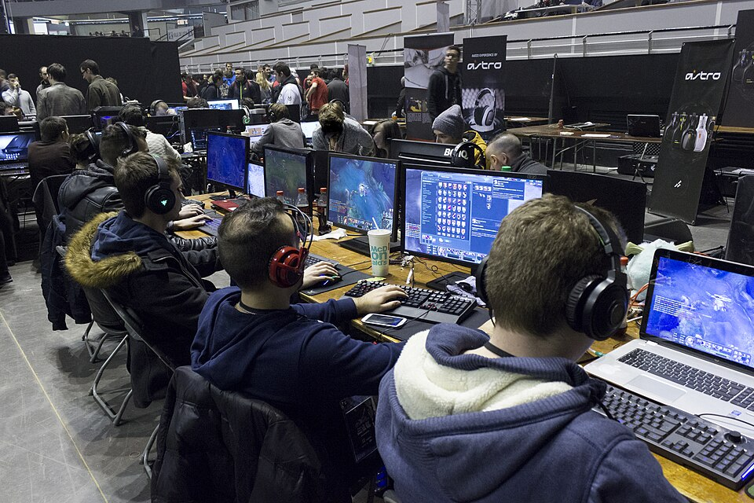

Όταν κάποιος ψάχνει για perfect iptv, συνήθως δεν αναζητά απλώς μια εφαρμογή. Ψάχνει την «τέλεια» εμπειρία: κανάλια που ανοίγουν αμέσως, εικόνα χωρίς κολλήματα, πλούσιο ελληνικό περιεχόμενο και μια ρύθμιση που να δουλεύει χωρίς ατελείωτες δοκιμές. Ο όρος όμως προκαλεί σύγχυση, γιατί άλλοι τον συνδέουν με γνωστές εφαρμογές αναπαραγωγής, άλλοι με playlists και άλλοι με ολόκληρες υπηρεσίες συνδρομής.
Σε αυτόν τον οδηγό θα δούμε τι σημαίνει πραγματικά ένα «τέλειο» IPTV για Έλληνες θεατές στην Ελλάδα, την Κύπρο και τη διασπορά. Θα ξεκαθαρίσουμε τη διαφορά ανάμεσα στον player και στην υπηρεσία, θα δούμε ποια κριτήρια μετράνε (σταθερότητα, κανάλια, EPG, συσκευές, υποστήριξη), πώς στήνεις τα πάντα σε λίγα λεπτά και ποια λάθη χαλάνε την εμπειρία. Στο τέλος θα καταλάβεις γιατί το greek iptv είναι μια πρακτική επιλογή για όσους θέλουν ελληνική τηλεόραση χωρίς εκπλήξεις.
Ο οδηγός είναι γραμμένος με απλά λόγια, χωρίς τεχνικούς ακρωνυμισμούς όπου δεν χρειάζονται, ώστε να μπορεί να τον ακολουθήσει και κάποιος που δεν έχει ξαναχρησιμοποιήσει IPTV. Διάβασε τον από την αρχή ή πήγαινε κατευθείαν στην ενότητα που σε ενδιαφέρει από τα περιεχόμενα.
Τι σημαίνει «Perfect IPTV»;
Ο όρος δεν έχει μία και μοναδική έννοια. Στην πράξη, οι χρήστες τον χρησιμοποιούν για τρία διαφορετικά πράγματα και είναι χρήσιμο να τα ξεχωρίσεις πριν πάρεις οποιαδήποτε απόφαση.
1. Ως όνομα εφαρμογής αναπαραγωγής
Πολλοί αναζητούν «perfect iptv» επειδή θυμούνται εφαρμογές τύπου «Perfect Player», δηλαδή προγράμματα που διαβάζουν λίστες καναλιών και τις εμφανίζουν σε οθόνη. Ένας player από μόνος του δεν περιέχει κανάλια. Είναι σαν ένας άδειος δέκτης: χρειάζεται πηγή για να δείξει κάτι.
2. Ως περιγραφή μιας ιδανικής εμπειρίας
Άλλοι χρησιμοποιούν τη φράση ως επιθυμία: «θέλω ένα τέλειο IPTV». Εδώ μετράνε η σταθερότητα, η ποιότητα εικόνας και η ευκολία χρήσης. Αυτή η ερμηνεία είναι και η πιο χρήσιμη, γι' αυτό και θα επικεντρωθούμε σε αυτήν.
3. Ως πλήρης υπηρεσία με κανάλια και υποστήριξη
Τέλος, κάποιοι εννοούν μια ολοκληρωμένη υπηρεσία: κανάλια, ταινίες, σειρές, οδηγό προγράμματος και ανθρώπους που απαντούν όταν κάτι δεν δουλεύει. Αυτό ακριβώς προσφέρει μια συνδρομητική υπηρεσία όπως το greek iptv.

Τα κριτήρια ενός τέλειου IPTV
Για να κρίνεις αν μια λύση πλησιάζει το «τέλειο», χρειάζεσαι συγκεκριμένα κριτήρια και όχι εντυπώσεις. Παρακάτω είναι αυτά που μετράνε περισσότερο για τον Έλληνα θεατή.
Σταθερότητα και ελάχιστο buffering
Το πιο σημαντικό κριτήριο. Ένα κανάλι που κολλάει στο γκολ ή στο κρίσιμο επεισόδιο καταστρέφει την εμπειρία, όσο όμορφη κι αν είναι η εφαρμογή. Η σταθερότητα εξαρτάται από τους servers της υπηρεσίας, από τη σύνδεσή σου και από τη συσκευή. Μια καλή υπηρεσία επενδύει σε ισχυρή υποδομή ώστε να αντέχει τις ώρες αιχμής, όπως τα βράδια και τα Σαββατοκύριακα με αθλητικά γεγονότα.
Πλήρης κάλυψη ελληνικών καναλιών
Για έναν Έλληνα θεατή, η λίστα πρέπει να περιλαμβάνει τα βασικά πανελλήνια κανάλια, ειδήσεις, αθλητικά, ψυχαγωγία, παιδικά και περιφερειακά κανάλια. Αν ζεις στο εξωτερικό, αυτό είναι και ο λόγος που διάλεξες IPTV: να νιώθεις ότι είσαι σπίτι. Μπορείς να δεις την ποικιλία στη σελίδα καναλιών.
Οδηγός προγράμματος (EPG)
Ο ηλεκτρονικός οδηγός προγράμματος δείχνει τι παίζει τώρα και τι ακολουθεί. Χωρίς EPG, ψάχνεις στα τυφλά. Με σωστό EPG, η τηλεόραση γίνεται πιο άνετη από την κλασική, γιατί βλέπεις όλο το πρόγραμμα με μια ματιά και ορίζεις υπενθυμίσεις.
Ποιότητα εικόνας
Τα περισσότερα κανάλια προσφέρονται σε HD και αρκετά σε Full HD, ενώ υπάρχει και 4K περιεχόμενο όπου η πηγή το υποστηρίζει. Αν σε ενδιαφέρει η υψηλή ανάλυση, δες και τον οδηγό μας για το 4k iptv.
Συμβατότητα με τις συσκευές σου
Το τέλειο IPTV δουλεύει εκεί που το χρειάζεσαι: στην τηλεόραση του σαλονιού, στο κινητό στη διαδρομή και στο tablet πριν τον ύπνο. Αν η υπηρεσία περιορίζει σε μία συσκευή, χάνεις ευελιξία.
Υποστήριξη και διαφάνεια
Όταν κάτι πάει στραβά, χρειάζεσαι ανθρώπους να σου απαντήσουν γρήγορα. Η υποστήριξη στα ελληνικά και η ξεκάθαρη τιμολόγηση, χωρίς κρυφές χρεώσεις, είναι κομμάτι της ποιότητας.
| Κριτήριο | Τι να ζητάς | Γιατί μετράει |
|---|---|---|
| Σταθερότητα | Ισχυροί servers, αντοχή στις ώρες αιχμής | Χωρίς κολλήματα σε αγώνες και σειρές |
| Κανάλια | Πλήρης ελληνική λίστα + διεθνή | Όλα σε μία υπηρεσία |
| EPG | Ενημερωμένο πρόγραμμα | Γρήγορη πλοήγηση |
| Συσκευές | TV, κινητό, tablet, box, υπολογιστής | Ευελιξία παντού |
| Υποστήριξη | Γρήγορες απαντήσεις στα ελληνικά | Λύση σε λίγα λεπτά |
Player ή υπηρεσία; Η διαφορά που μετράει
Αυτό είναι το σημείο όπου χάνονται οι περισσότεροι αρχάριοι. Ο συνδυασμός «player + πηγή περιεχομένου» είναι ο μόνος τρόπος να δεις IPTV, και η ποιότητα του αποτελέσματος εξαρτάται και από τα δύο.
Τι κάνει ο player
Ο player είναι η εφαρμογή που αναπαράγει το βίντεο. Προσφέρει το περιβάλλον, τη λίστα καναλιών, την αναζήτηση και τις ρυθμίσεις εικόνας. Υπάρχουν πολλοί δωρεάν και επί πληρωμή players για Android, Windows, smart TV και άλλες πλατφόρμες. Αν θέλεις σύγκριση, δες το άρθρο μας για τον καλύτερο iptv player για android.
Τι κάνει η υπηρεσία
Η υπηρεσία είναι αυτή που προσφέρει πραγματικά τα κανάλια, τον οδηγό και τον server από τον οποίο έρχεται το σήμα. Ένας εξαιρετικός player με αδύναμη πηγή θα δείχνει κολλήματα. Αντίθετα, μια ισχυρή υπηρεσία δουλεύει καλά ακόμη και με έναν απλό player.
Δωρεάν λίστες έναντι συνδρομής
Οι δωρεάν λίστες που κυκλοφορούν στο διαδίκτυο είναι συνήθως ασταθείς, αλλάζουν συχνά και δεν έχουν υποστήριξη. Αν ο στόχος σου είναι ένα «τέλειο» αποτέλεσμα, η συνδρομή σε αξιόπιστη υπηρεσία είναι αναπόφευκτη. Για το τι αξίζει να περιμένεις, διάβασε και το άρθρο για το paid iptv.

Συμβατές συσκευές
Η καλή είδηση είναι ότι δεν χρειάζεσαι ειδικό εξοπλισμό. Σχεδόν κάθε σύγχρονη συσκευή με σύνδεση στο ίντερνετ μπορεί να παίξει IPTV.
Smart TV και TV box
Οι περισσότερες έξυπνες τηλεοράσεις (Samsung, LG, Android TV) και τα TV box υποστηρίζουν εφαρμογές αναπαραγωγής. Για τηλεόραση, η ενσύρματη σύνδεση Ethernet δίνει συνήθως τη μεγαλύτερη σταθερότητα. Δες και τον οδηγό για το καλύτερο iptv για smart tv.
Κινητά και tablet
Σε Android και iOS μπορείς να δεις τα κανάλια σου οπουδήποτε, με Wi-Fi ή δεδομένα. Ιδανικό για ταξίδια ή για όσους ζουν εκτός Ελλάδας.
Υπολογιστής και Fire TV
Σε Windows και Mac υπάρχουν πολλοί players, ενώ σε Fire TV Stick η εγκατάσταση γίνεται εύκολα. Η απόδοση είναι πολύ καλή αν η συσκευή έχει αρκετή μνήμη και σταθερό δίκτυο.
Πώς το ρυθμίζεις βήμα-βήμα
Ένα «τέλειο» IPTV δεν χρειάζεται πολύπλοκη διαδικασία. Ακολούθησε τα παρακάτω βήματα και σε λίγα λεπτά θα βλέπεις τηλεόραση.
- Έλεγξε το ίντερνετ σου. Για HD χρειάζονται περίπου 8-10 Mbps ανά ροή, ενώ για 4K περίπου 25 Mbps. Κάνε ένα speed test πριν ξεκινήσεις.
- Διάλεξε υπηρεσία. Επίλεξε πάροχο με ελληνικά κανάλια, EPG και υποστήριξη, όπως το greek iptv.
- Εγκατάστησε έναν player. Κατέβασε μια αξιόπιστη εφαρμογή από το επίσημο κατάστημα της συσκευής σου.
- Πρόσθεσε τα στοιχεία σου. Εισήγαγε τη λίστα ή τα στοιχεία σύνδεσης που σου στέλνει η υπηρεσία.
- Φόρτωσε τον οδηγό (EPG). Περίμενε λίγα λεπτά να ενημερωθεί το πρόγραμμα.
- Δοκίμασε και προσάρμοσε. Έλεγξε μερικά κανάλια, δημιούργησε αγαπημένα και ρύθμισε την ποιότητα εικόνας.
Αναλυτικές οδηγίες υπάρχουν και στη σελίδα tutorial, ενώ για γρήγορες απορίες μπορείς να δεις τις συχνές ερωτήσεις.
Συχνά λάθη που χαλάνε την εμπειρία
Ακόμη και με καλή υπηρεσία, μερικά απλά λάθη μπορούν να δώσουν εντυπώσεις κακής ποιότητας. Δες τα πιο συνηθισμένα.
Αδύναμο Wi-Fi
Το Wi-Fi μακριά από το router ή σε γεμάτο δίκτυο προκαλεί κολλήματα. Αν γίνεται, χρησιμοποίησε καλώδιο ή τοποθέτησε το router πιο κοντά.
Παλιά ή υποτονική συσκευή
Συσκευές με λίγη μνήμη δυσκολεύονται με μεγάλες λίστες και HD ροές. Μια πιο σύγχρονη συσκευή λύνει συχνά το πρόβλημα.
Επιλογή υπηρεσίας μόνο με βάση την τιμή
Η φθηνότερη επιλογή δεν είναι πάντα η καλύτερη. Αν θέλεις να συγκρίνεις λογικά, δες το άρθρο για τον φθηνότερο πάροχο iptv και σκέψου τι ακριβώς προσφέρει κάθε τιμή.
Αγνόηση των συνδέσμων από άγνωστες πηγές
Να είσαι προσεκτικός με φόρουμ και ιστοσελίδες που σου ζητούν στοιχεία ή πληρωμές χωρίς διαφάνεια. Δες τον οδηγό για το open iptv forum για πρακτικές συμβουλές ασφάλειας.
Σύγκριση με άλλες υπηρεσίες
Είναι χρήσιμο να γνωρίζεις και τι υπάρχει στην αγορά. Για παράδειγμα, η tilaa iptv και η romania iptv απευθύνονται σε άλλα κοινά, ενώ το Greek IPTV εστιάζει αποκλειστικά στον Έλληνα θεατή.
Πώς αξιοποιείς το IPTV στην καθημερινότητα
Η αξία ενός καλού IPTV φαίνεται στην καθημερινή χρήση. Δεν αφορά μόνο το βραδινό δελτίο ειδήσεων, αλλά ολόκληρο το πρόγραμμα της οικογένειας.
Αθλητικά και ζωντανά γεγονότα
Για τους φίλους του ποδοσφαίρου και του μπάσκετ, η σταθερότητα στις ώρες αιχμής είναι το παν. Ένα καλό IPTV σου επιτρέπει να βλέπεις τους αγώνες ζωντανά, στο σαλόνι ή στο κινητό, χωρίς να εξαρτάσαι από ένα συγκεκριμένο πακέτο καλωδιακής. Φρόντισε πριν από μεγάλους αγώνες να ελέγχεις τη σύνδεσή σου και να κλείνεις βαριές λήψεις στο δίκτυο.
Ειδήσεις, σειρές και ψυχαγωγία
Τα ελληνικά δελτία, οι εκπομπές και οι σειρές είναι ο λόγος που πολλοί Έλληνες του εξωτερικού επιλέγουν IPTV. Με τη βιβλιοθήκη ταινιών και σειρών κατά παραγγελία, μπορείς να δεις ένα επεισόδιο όποτε σε βολεύει και όχι μόνο τη στιγμή της μετάδοσης.
Παιδικά και οικογενειακό περιεχόμενο
Τα παιδικά κανάλια και οι ταινίες κινουμένων σχεδίων κάνουν το IPTV κατάλληλο για όλη την οικογένεια. Αξίζει να δημιουργήσεις ξεχωριστή λίστα αγαπημένων για τα παιδιά, ώστε να βρίσκουν γρήγορα αυτά που τους αρέσουν.
Νομιμότητα και ασφάλεια
Προτίμησε υπηρεσίες με ξεκάθαρους όρους, υποστήριξη και επίσημους τρόπους πληρωμής. Απέφυγε πηγές που ζητούν ευαίσθητα στοιχεία χωρίς εξήγηση και μην κατεβάζεις εφαρμογές εκτός επίσημων καταστημάτων. Η ασφάλεια των δεδομένων σου μετράει όσο και η ποιότητα της εικόνας.
Γιατί το Greek IPTV είναι πρακτική επιλογή
Αν θέλεις μια λύση που να πλησιάζει την ιδέα του «τέλειου» IPTV για ελληνικό κοινό, το Greek IPTV συγκεντρώνει όσα αναφέραμε σε μία υπηρεσία: πρόσβαση σε +30.000 κανάλια και +150.000 ταινίες και σειρές, με εστίαση στα ελληνικά κανάλια, αθλητικά, ειδήσεις και παιδικά.
- Άμεση ενεργοποίηση μετά την εγγραφή, χωρίς μακροχρόνιο συμβόλαιο.
- Συμβατότητα με smart TV, Android, iOS, Fire TV, TV box και υπολογιστή.
- Τιμές από €10.99/μήνα, με ξεκάθαρα πακέτα στη σελίδα των τιμών.
- Υποστήριξη για να λύνεις γρήγορα τυχόν απορίες ρύθμισης.
Αν θέλεις πρώτα να δεις τι σου ταιριάζει, ξεκίνα από την ελληνική τηλεόραση online και δες πώς μεταφράζονται όλα αυτά στην πράξη.
Συχνές Ερωτήσεις για το Perfect IPTV
Τι είναι το perfect iptv;
Δεν είναι ένας ενιαίος όρος. Άλλοι εννοούν μια εφαρμογή αναπαραγωγής, άλλοι μια ιδανική εμπειρία και άλλοι μια ολοκληρωμένη υπηρεσία με κανάλια. Σε κάθε περίπτωση χρειάζεσαι και player και αξιόπιστη πηγή καναλιών.
Χρειάζομαι ξεχωριστό player για το Greek IPTV;
Ναι, χρειάζεσαι μια συμβατή εφαρμογή αναπαραγωγής στη συσκευή σου. Μετά την εγγραφή σου δίνονται οι οδηγίες για να τη ρυθμίσεις γρήγορα.
Ποια ταχύτητα ίντερνετ χρειάζεται;
Για HD ροή υπολογίζε περίπου 8-10 Mbps και για 4K περίπου 25 Mbps ανά ταυτόχρονη ροή. Αν βλέπουν πολλές συσκευές μαζί, χρειάζεσαι περισσότερο εύρος ζώνης.
Δουλεύει το Greek IPTV εκτός Ελλάδας;
Ναι. Η υπηρεσία απευθύνεται και στη διασπορά, δηλαδή σε Έλληνες σε Ευρώπη, Αμερική, Αυστραλία και αλλού, αρκεί να υπάρχει σταθερή σύνδεση στο ίντερνετ.
Μπορώ να το δω σε πολλές συσκευές;
Μπορείς να το χρησιμοποιήσεις σε διαφορετικές συσκευές, όπως τηλεόραση, κινητό και tablet, σύμφωνα με το πακέτο που θα επιλέξεις. Δες τις λεπτομέρειες στη σελίδα των πακέτων.
Υπάρχει δωρεάν λύση που να είναι «τέλεια»;
Οι δωρεάν λίστες είναι συνήθως ασταθείς, χωρίς υποστήριξη και με συχνές διακοπές. Για σταθερή και ποιοτική εμπειρία, η συνδρομή σε αξιόπιστη υπηρεσία είναι η πιο ασφαλής επιλογή.
Πώς λύνω τα κολλήματα (buffering);
Δοκίμασε ενσύρματη σύνδεση, επανεκκίνηση του router και της συσκευής, και έλεγξε την ταχύτητά σου. Αν το πρόβλημα συνεχίζεται, επικοινώνησε με την υποστήριξη.
Συμπέρασμα
Το «perfect iptv» δεν είναι ένα προϊόν, αλλά ο συνδυασμός σωστού player, αξιόπιστης υπηρεσίας, καλής σύνδεσης και σωστής ρύθμισης. Αν επικεντρωθείς στα κριτήρια που είδαμε, δηλαδή σταθερότητα, ελληνικά κανάλια, EPG, συσκευές και υποστήριξη, θα φτάσεις πολύ κοντά στο ιδανικό αποτέλεσμα. Για ελληνική τηλεόραση χωρίς περιττές περιπλοκές, το Greek IPTV είναι μια επιλογή που αξίζει να δοκιμάσεις.
Θυμήσου επίσης ότι η καλύτερη ρύθμιση είναι αυτή που ταιριάζει στις δικές σου συνήθειες. Αν βλέπεις κυρίως αθλητικά, δώσε βάση στη σταθερότητα. Αν προτιμάς σειρές και ταινίες, δώσε βάση στη βιβλιοθήκη. Αν ζεις στο εξωτερικό, επίλεξε υπηρεσία που σε καλύπτει ανεξάρτητα από τη χώρα σου. Με λίγη προσοχή στα παραπάνω, η τηλεόραση που ονειρεύεσαι δεν είναι πια δύσκολο να γίνει πραγματικότητα στο σπίτι σου, σε όποια γωνιά του κόσμου κι αν βρίσκεσαι.